Nota: La mayoría de capturas de esta página no están tomadas de la última versión de Brackets, por lo que puede haber ligeras diferencias.
Conseguir Brackets
Brackets es un editor de páginas web desarrollado principalmente por la empresa Adobe Systems (muy conocida por productos como PostScript, Acrobat Reader, Flash, PhotoShop, Premiere, Dreamweaver, etc.).
La página oficial de Brackets es http://brackets.io/. Desde la página principal se puede descargar la última versión estable:
En cdlibre.org hay una sección dedicada a editores web, con información detallada sobre la última versión estable publicada.
Brackets es un proyecto de software libre que se distribuye bajo la licencia MIT.
La primera versión beta de Brackets se publicó en diciembre de 2011. Brackets 1.0 se publicó en noviembre de 2014. Actualmente (marzo de 2019), se puede descargar Brackets 1.13, publicada el 18 de junio de 2018.
Antes de la versión 1.0 tenía un ritmo de desarrollo muy rápido (cada mes se publicaba una nueva versión de Brackets), pero desde entonces el ritmo de desarrollo se ha ralentizado, aunque se sigue publicando una nueva versión cada cuatro meses aproximadamente, como muestra el gráfico siguiente, que muestra las fechas de publicación de Brackets.
El equipo de desarrollo de Brackets de Adobe anunció en el otoño de 2015 que durante unos 9 meses se iban a dedicar a desarrollar una nueva versión de Dreamweaver, el editor web comercial de Adobe, basada en Brackets y que pasado ese tiempo volverían a trabajar en Brackets. Por desgracia, esa vuelta no se ha producido, por lo que el ritmo de desarrollo de Brackets se ha resentido en los últimos tres años, como puede comprobarse en la gráfica de commits en GitHub.
Al instalar Brackets en Windows, el firewall de Windows puede mostrar un aviso del servidor incluido en Brackets:
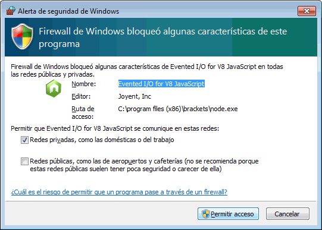
Actualizar Brackets
En caso de que se haya publicado una nueva versión, al iniciar Brackets se mostrará una ventana de aviso y un icono bajo el gestor de extensiones.
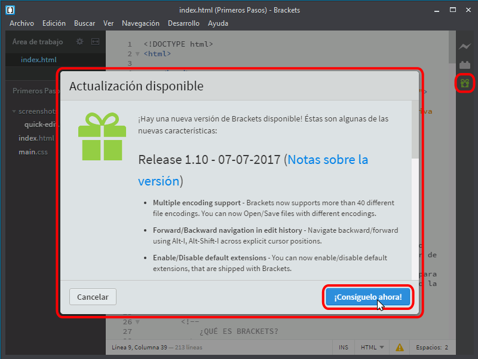
Al hacer clic en el botón "¡Consíguelo ahora!" se abrirá en el navegador la página web de Brackets, desde la que se puede descargar e instalar la nueva versión.
Interfaz de Brackets
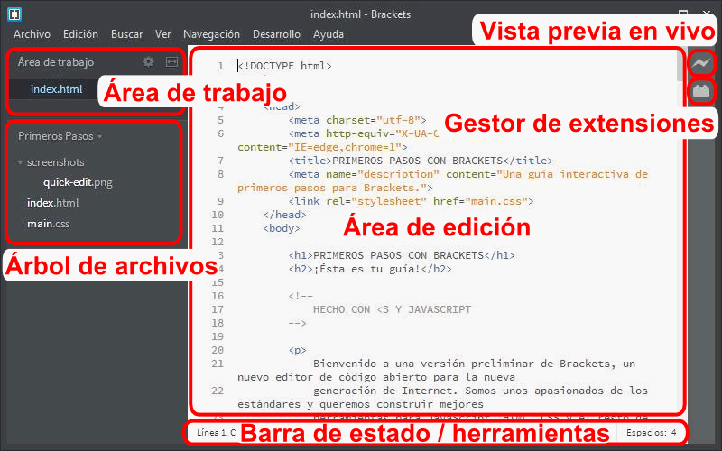
El árbol de archivos
El árbol de archivos muestra todos los archivos y carpetas que contiene una determinada carpeta, normalmente la carpeta de trabajo que contiene nuestras páginas web.. Al instalar Brackets se muestra la carpeta de ejemplo "Primeros pasos" (en Windows, C:\Program Files (x86)\Brackets\samples\es\Primeros Pasos).
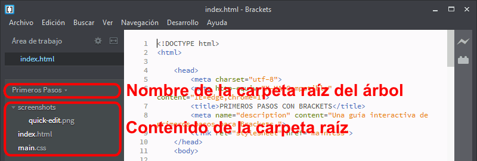
Cambiar la carpeta raíz del árbol de archivos
Para cambiar la carpeta raíz del árbol de archivos, hay que hacer clic en el nombre del árbol de archivos ...
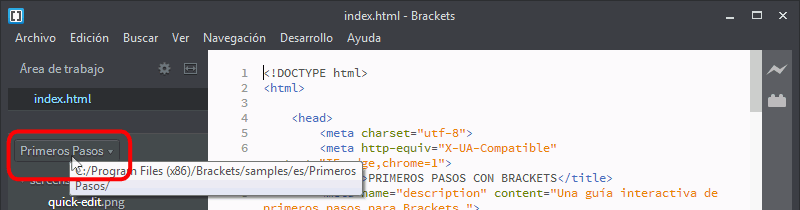
... y hacer clic en Abrir carpeta ...
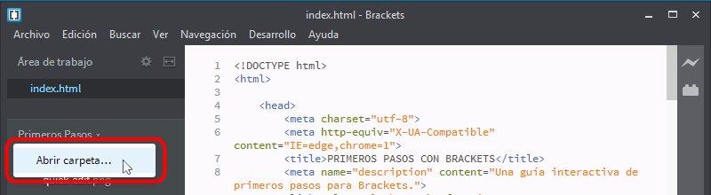
... seleccionar la carpeta del disco en la que tengamos o vayamos a tener nuestras páginas, y hacer clic en el botón Seleccionar carpeta. En la captura se ha seleccionado la carpeta Mis documentos > LMSGI Nombre > HTML CSS.
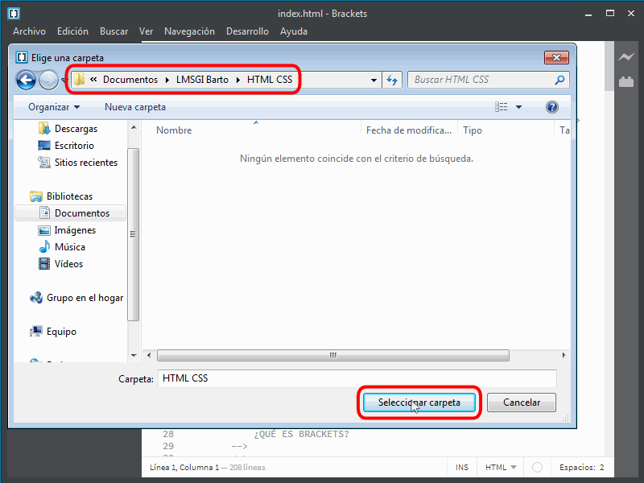
En el árbol de archivos se mostrará el nombre y contenido de la carpeta elegida. Como en este caso es una carpeta vacía, no se muestra el área de trabajo.
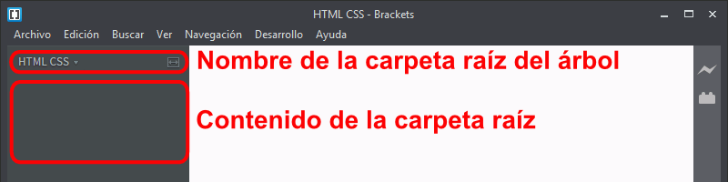
Crear una carpeta
Para crear una carpeta, se puede hacer clic derecho en el contenido del árbol de archivos y elegir la opción Nueva carpeta ...
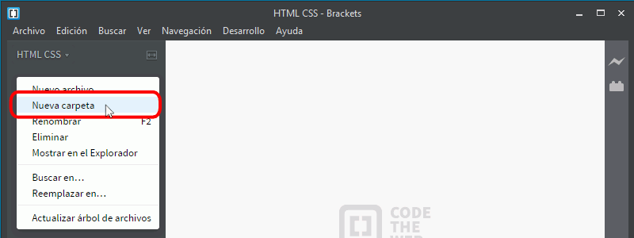
... escribir el nombre deseado y pulsar Intro ...
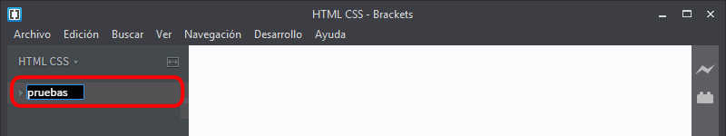
Una vez creada la carpeta, se mostrará en el árbol de archivos:
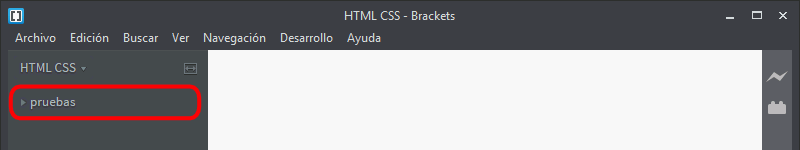
Se pueden crear tantas carpetas como sean necesarias:
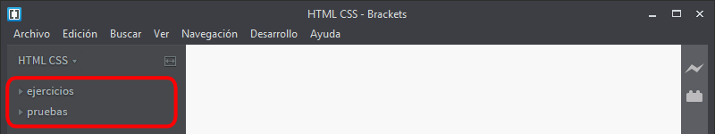
Crear un archivo
Para crear un archivo en una carpeta, se puede hacer clic derecho en el contenido del árbol de archivos y elegir la opción Nuevo archivo ...
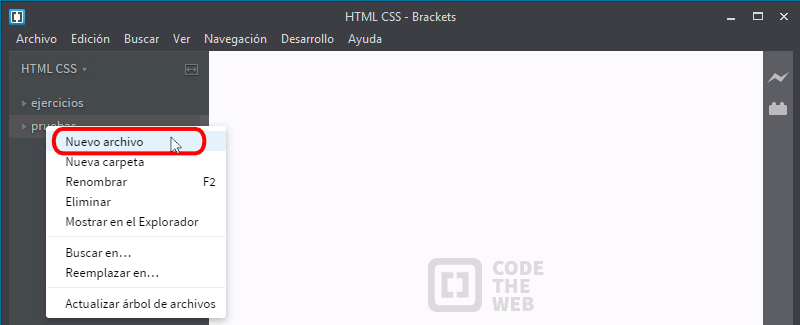
... escribir el nombre deseado y pulsar Intro ...
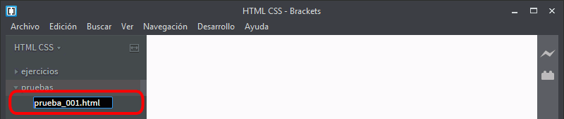
Una vez creado el archivo, se mostrará en el árbol de archivos. El archivo se abre automáticamente en el editor, por lo que se añade al área de trabajo y se muestra su contenido
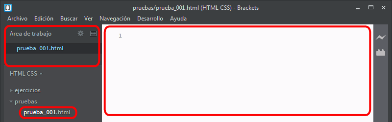
Plegar árbol de archivos
Haciendo clic en los triángulos situados a la izquierda de los nombres de las carpetas se pueden plegar (ocultar) o desplegar (mostrar) su contenido.
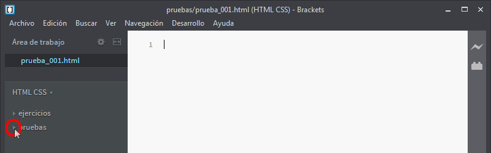
El área de trabajo
El área de trabajo sólo está visible cuando se han abierto archivos en Brackets. En el ejemplo siguiente, el área de trabajo no es visible, pero se pueden ver los archivos existentes en el árbol de archivos.
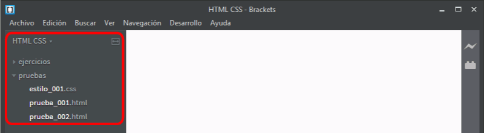
Haciendo clic en cualquier archivo del árbol de archivos, este se abre en el área de edición y se muestra su nombre en el área de trabajo.
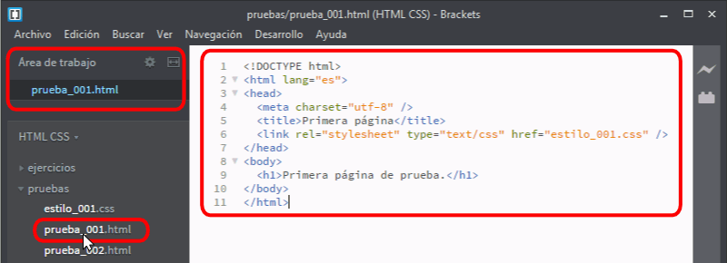
Brackets puede tener abiertos varios documentos a la vez. Los nombres de todos los documentos abiertos se muestran en el área de trabajo. Haciendo clic en el nombre del archivo en el área de trabajo, este se mostrará en el área de edición.
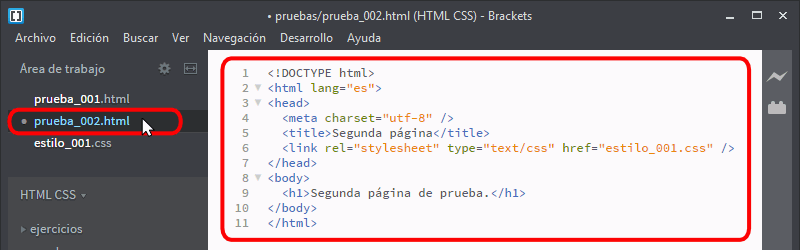
Los nombres de archivos en el área de trabajo se muestran en el mismo orden en que se abrieron los archivos. Si se quiere modificar ese orden, se puede hacer clic en el icono de la rueda dentada del área de trabajo.
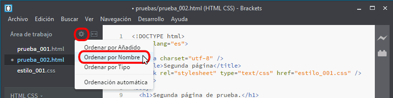
Al situar el cursor sobre el nombre de un archivo en el área de trabajo se muestra un icono en forma de aspa a la izquierda del nombre. Haciendo clic en ese aspa, el archivo se cerrará y su nombre dejará de mostrarse en el área de trabajo.
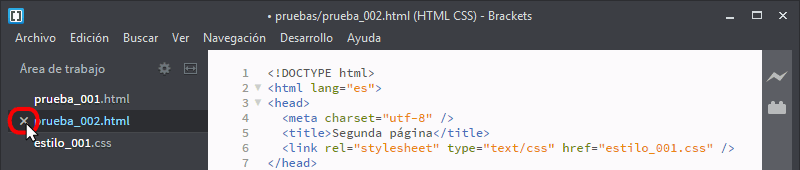
Dividir la pantalla
Desde la versión Brackets 44 (octubre de 2014), el área de edición se puede dividir en dos paneles, lo que permite ver dos documentos, uno en cada panel. Desde la versión Brackets 1.6 (enero de 2016), se puede abrir el mismo documento en los dos paneles.
Para ello, primero hay que hacer clic en el icono de división del área de trabajo y elegir el tipo de división: sin división, división vertical o división horizontal.
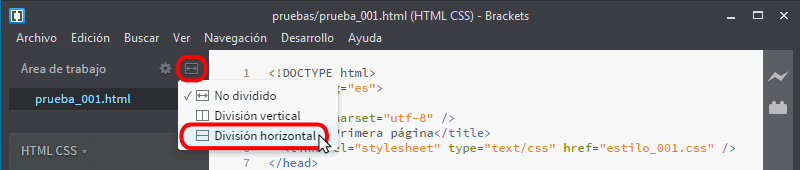
Al elegir un tipo de división, el área de trabajo y el área de edición se dividirán en dos paneles. Para dar el foco a uno de los dos paneles, hay que hacer clic en él.
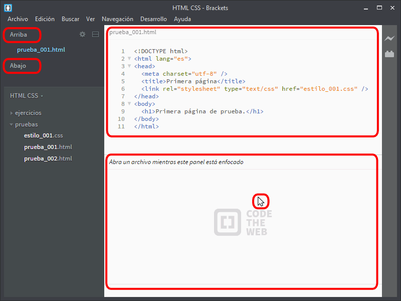
Al hacer clic en un nombre de archivo, el archivo se abrirá en el panel que tenga el foco. El nombre del archivo abierto se mostrará en el área de trabajo.
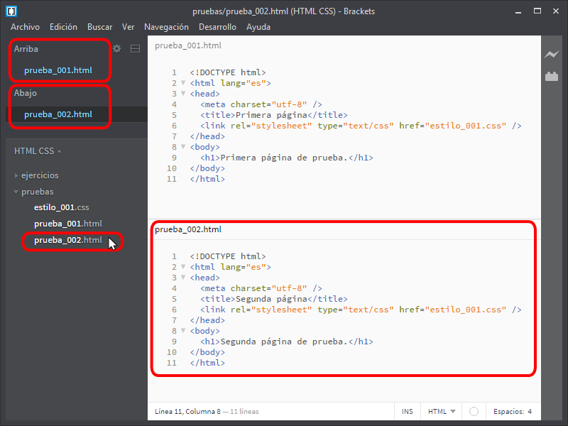
Se puede mover un archivo de un panel a otro arrastrándolo en el área de trabajo.
Ver páginas web en el navegador
Mientras se escriben las páginas web en Brackets es conveniente ir viendo el resultado en el navegador. Tenemos dos alternativas:
abrir las páginas como archivos (sin pasar un servidor) en el navegador que prefiramos
utilizar la vista previa en vivo de Brackets para ver las páginas en Google Chrome (pasando por el servidor incluido en Brackets)
Abrir páginas en el navegador
Para abrir una página en el navegador que prefiramos, hay que hacer clic derecho en el nombre del archivo (en el área de trabajo o en el árbol de archivos) y elegir la opción Mostrar en el Explorador.
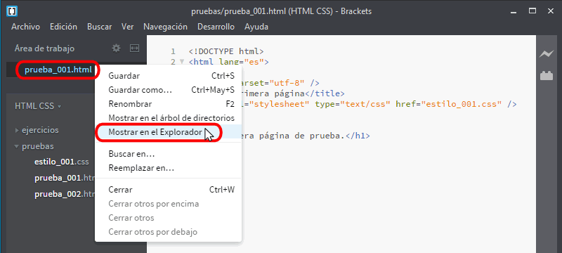
Se abrirá el explorador de Windows en la carpeta en la que se encuentre la página.
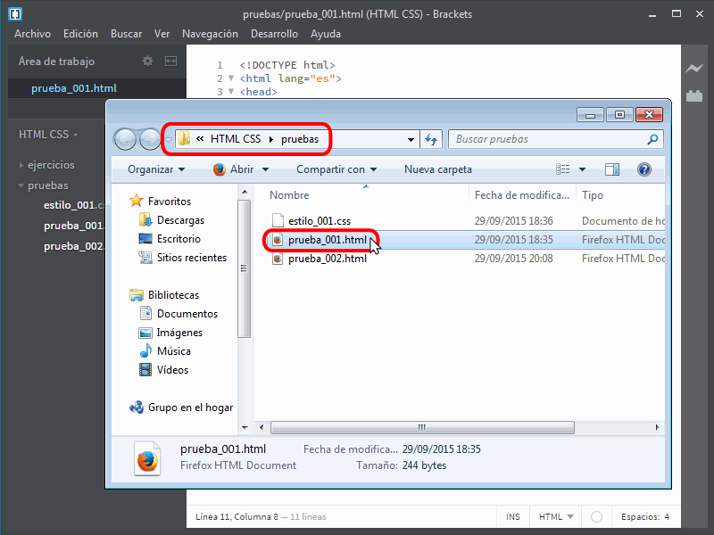
Haciendo doble clic en el archivo, se abrirá la página en el navegador predeterminado. Haciendo clic derecho y eligiendo la opción Abrir con ... podemos elegir otro navegador. En la barra de dirección del navegador podemos ver el prefijo file:/// que nos indica que la página se ha abierto como archivo (sin pasar por un servidor).
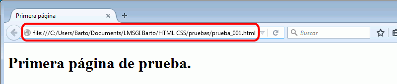
Si modificamos la página web en Brackets, para ver la versión actualizada en el navegador hay que guardar el archivo en Brackets y actualizar la página en el navegador.
Vista previa en vivo en el navegador
Una de las características más interesantes de Brackets es la posibilidad de ver en Google Chrome las páginas al tiempo que se editan. Para ello hay que hacer clic en el icono de Vista previa en vivo.
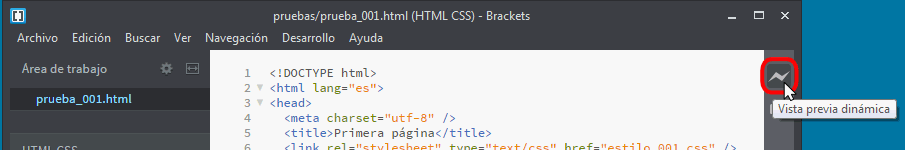
Se abrirá Google Chrome mostrando el documento. En la barra de dirección del navegador podemos ver la dirección 127.0.0.1 que nos indica que la página se ha abierto en un servidor local (incluido en Brackets).
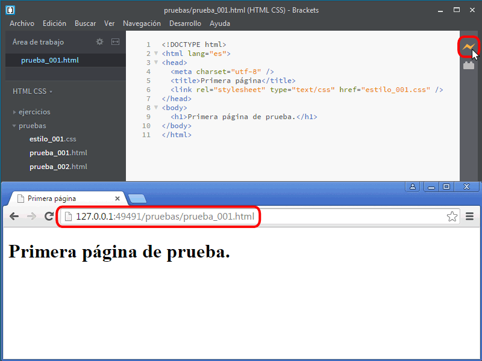
A partir de ese momento, las modificaciones en el documento se mostrarán inmediatamente en el navegador sin necesidad de actualizar el contenido. El elemento que se está editando en Brackets se muestra en Google Chrome con un borde azul.
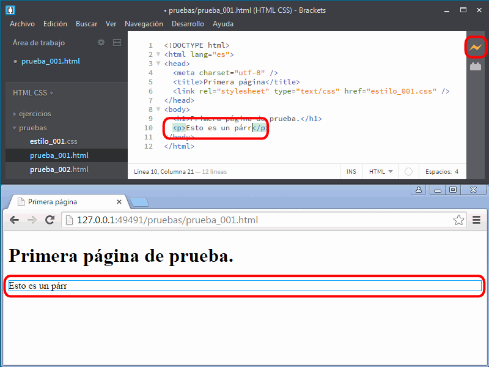
Desgraciadamente, la vista previa en vivo no controla el desplazamiento de la pantalla en el navegador, es decir, que si estamos editando una página larga y queremos ir viendo los cambios en el navegador, debemos desplazar la página manualmente en el navegador para ver las modificaciones. El bug 9938 está dedicado a este inconveniente, pero no ha tenido ninguna actividad.
Para desactivar la Vista previa en vivo hay que hacer clic en el icono de Vista previa en vivo.
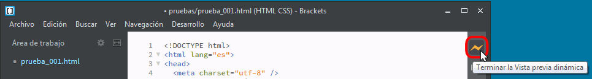
A partir de ese momento, las modificaciones en el documento no se mostrarán en el navegador hasta que no se guarde el documento y se actualice el contenido en el navegador (o se vuelva a activar la Vista previa en vivo).
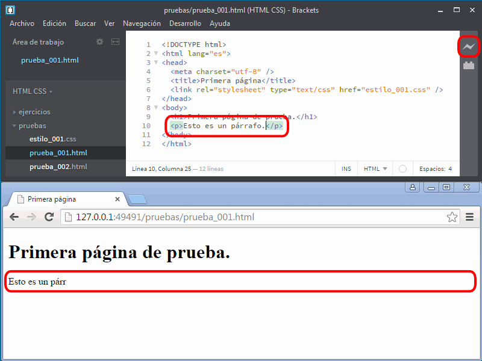
A partir de Brackets 1.1 se puede configurar Brackets de manera que la vista en vivo abra el navegador predeterminado (Chrome, Firefox, IE, etc.), pero no está activada por defecto (quizás porque no funciona correctamente en todos los casos).
Para hacerlo, es necesario abrir el archivo de preferencias (brackets.json) mediante la opción de menú Desarrollo > Abrir archivo de preferencias y añadir la opción:
"livedev.multibrowser": true,
Nota: En el archivo de configuración, las preferencias deben ir separadas por comas (,).
Configuración
Sangría
La sangría que se recomienda utilizar en este curso es de 2 espacios. Para configurar Brackets de esa manera, hay que hacer clic en el número que se muestra en la parte inferior derecha de la ventana (es necesario tener algún archivo abierto en el área de trabajo.
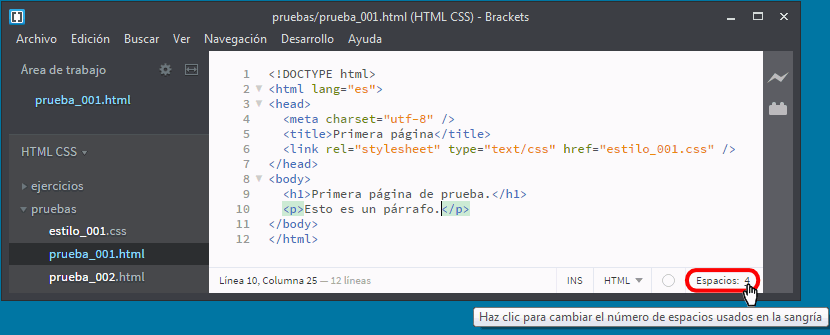
Se podrá editar el valor. Hay que cambiarlo a 2 y pulsar Intro.
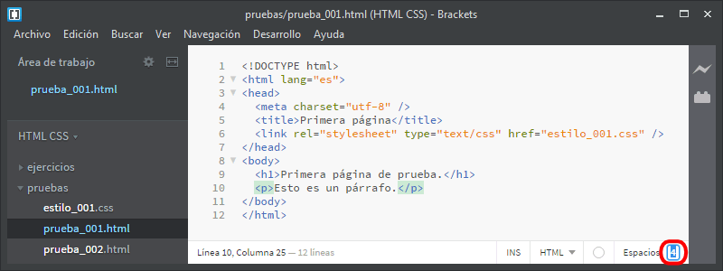
El nuevo valor se mostrará en lugar del anterior.
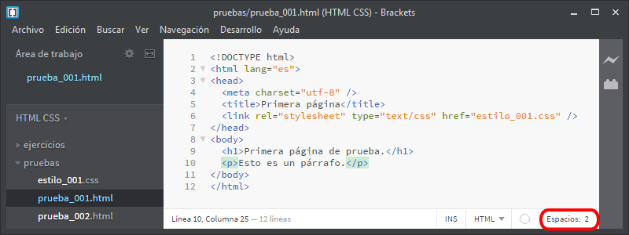
Editar en Brackets
Plegado de código (Code Folding)
A partir de la versión Brackets 1.3 (publicada el 17 de abril de 2015) se ha incorporado a Brackets la antigua extensión Code Folding(de Patrick Oladimeji), que permitía plegar secciones de código.
Desde esa versión, Brackets muestra muestra unos triángulos en las secciones de código susceptibles de ser plegadas (etiquetas que incluyen varios elementos, etiquetas cuyo contenido abarca 3 o más líneas, etc.).
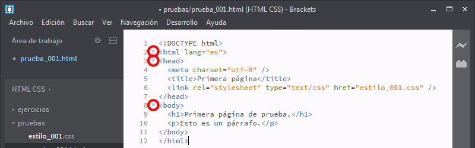
Haciendo clic en los triángulos, la sección se pliega y el triángulo cambia de orientación.
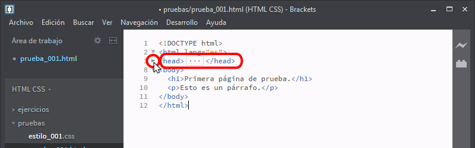
Para restaurar la sección, se puede hacer clic en el triángulo o en el icono situado entre las etiquetas de la sección plegada.
 Conseguir Brackets
Conseguir Brackets